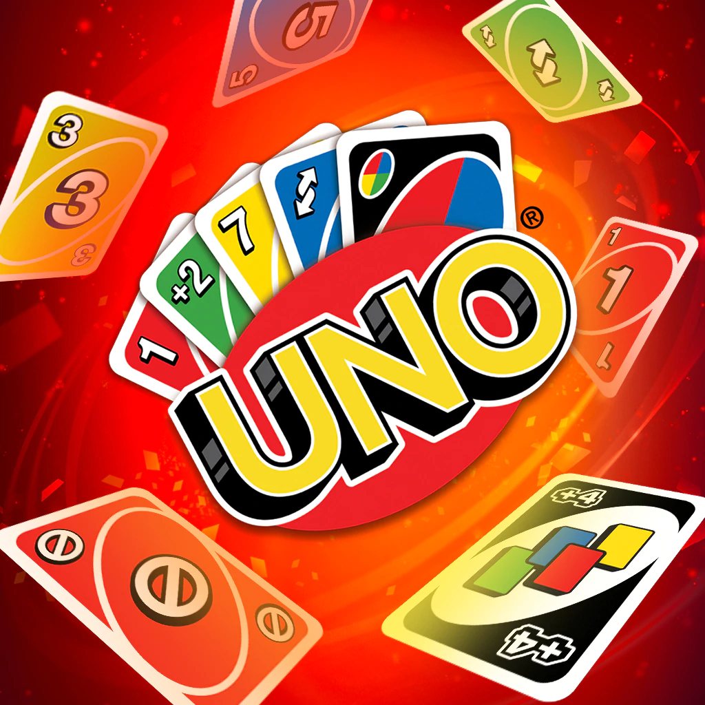
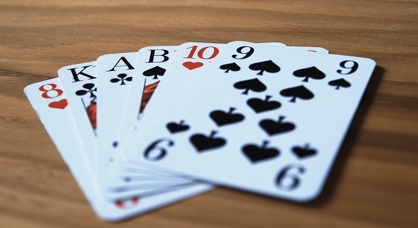
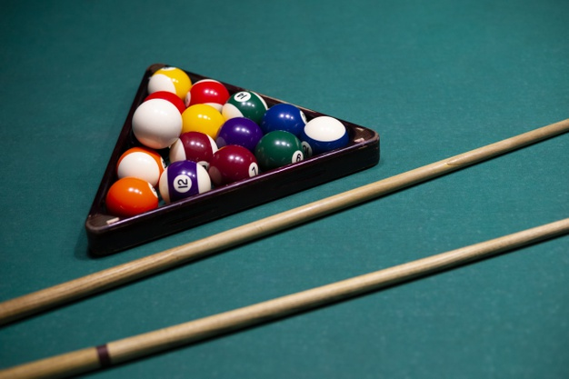

Deltagarna drar om vem som skall blanda korten. Den spelare som drar det högsta kortet blandar och delar ut sju kort till varje spelare. Korten spelas efter färg och valör. Ett kort, vilket som helst kan spelas i en och samma färg. Du kan också byta färg. Det gör du genom att lägga ett kort med samma valör fast i en annan färg på det kort som ligger med symbolsidan uppåt.
Inlagt: 02/12

Vi rekomenderar kortspelet vändtia är ett roligt kortspel som enkel spelas med en helt vanlig kortlek, utan jokrar. Det passar perfekt för två till tio spelare. Andra korspel som kan spelas är t.ex plumb, olika verisoner av poker, finns i sjön och mycket annat.
Inlagt: 02/12

Det vanligaste biljard spelet eight ball går ut på att du och en vän singlar slant om vem som får börja att spränga. Placera bollarna i triangeln och placera bollarna på punkten. Om den som spränger sätter exempelvis en färgad boll, då får den spelaren endast sätta de färgade bollarna, och den som inte sprängde måste sätta halva bollar.